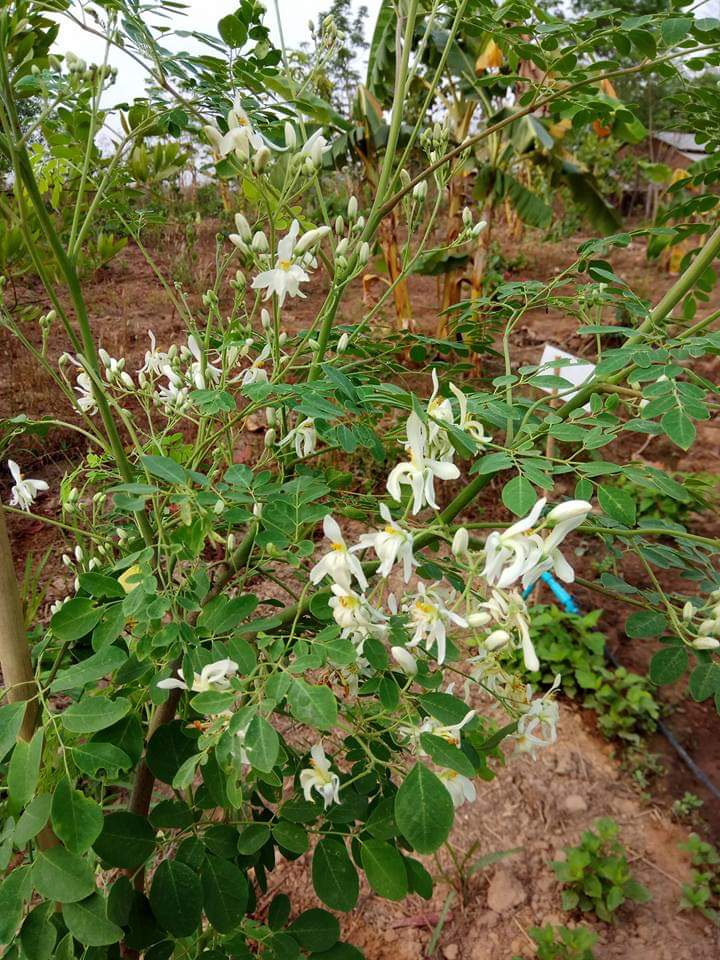

ဆေးဖက်ဝင် ဒန့်သလွန်ပင်

ဒန့်သလွန်ပင်သည် ဟင်းသီး ဟင်းရွက်ပင် အဖြစ် မြန်မာနိုင်ငံ နေရာ အနှံ့ အပြားတွင် ပေါက်ရောက်သည်။ ပင်လတ်မျိုးဖြစ်ပြီး အမြင့် ၂၅ ပေ အထိ မြင့်သည်။ အခေါက်ထူ၍ ချောပြီး အဖြူစက် ကလေးများ ရှိသည်။
အတွင်းသား ဖြူသည်။ ဒန့်သလွန်သီးသည် ရှည်လျား၍ အစိမ်းရင့်ရောင် ရှိပြီး အက်ကွဲသီး ဖြစ်သည်။ အမြှောင်း ပါသည်။ အသီး အတွင်းတွင် အစေ့များ တန်းစီလျက် ငါးစေ့၊ ခြောက်စေ့ခန့် ပါဝင်သည်။ အတွင်းသား ထူသည်။
အစေ့၌ အတောင် ပါသည်။ ကဆုန်၊ နယုန်လ များတွင် သီးသည်။
မြန်မာ့ ဆေးကျမ်းများ အလိုအရ ဒန့်သလွန်သည် အနည်းငယ် ချို၏။ ဖန်သော အရသာ ရှိ၏။ ထက်မြက်၏။ ကြေလွယ်၏။ နှုတ်ကို မြိန်စေ၏။ ဝမ်းမီးကို တောက်စေ၏။ လေ၊ သလိပ်၊ သည်းခြေကို နိုင်၏။
အပူနာ၊ အဖျဉ်း၊ ဂူလုံး၊ အကြောအခြင် ရောင်ရမ်းနာ တို့ကို နိုင်၏။ မျက်စိကို အကျိုးပြု၏။
ဒန့်သလွန်ရွက်ကို ကြက်သွန်ဖြူ၊ ပတဲကောမြစ်၊ မိဿလင်တို့နှင့် ဟင်းခါးချက် သောက်သော် ရာသီထိမ်ခြင်း ပျောက်၏။ ဒန့်သလွန်ရွက်ကို သုံးခွက် တစ်ခွက်တင် ဟင်းချို အဖြစ် ပြုတ်သောက်သော် သွေးတိုး ကျ၏။
ဒန့်သလွန်မြစ်ကို ထုထောင်း ကြိတ်ချေ၍ အရည်ကို ညှစ်ကာ စားပွဲဇွန်းနှင့် တစ်ဇွန်းခန့် သောက်ပါက အသံဝင်၊ အသံကပ်၊ လည်ချောင်းနာ ပျောက်၏။ ဒန့်သလွန် မြစ်နှင့် မုန်ညှင်းစေ့ မျှတ ပေါင်းစပ်၍ ရောကြိတ်ပြီး ရေတွင် နှစ်နာရီကျော်မျှ စိမ်ကာ တစ်ခါသောက်
စားပွဲဇွန်း တစ်ဇွန်း တစ်နေ့ သုံးကြိမ် သောက်ပါက အစာမကြေ ဝမ်းဖော ဝမ်းရောင် ပျောက်ကင်း၏။